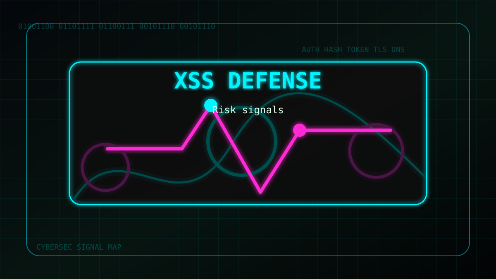
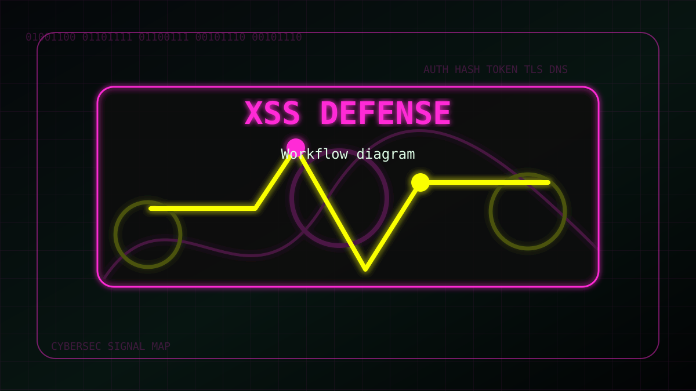

Що варто знати
Починай з контексту: хто може атакувати, що він хоче отримати і які сигнали можна перевірити безпечно.
Окремо збирай факти: домен, час, заголовки, токени, хеші, адреси та дії користувача. Факти допомагають не плутати припущення з доказами.

Зображення недоступне
Карта сигналів і ризиків
Практичний підхід
Для особистої безпеки важливі прості кроки: оновлення, унікальні паролі, MFA, перевірка посилань і спокійна реакція на підозрілі події.
Для команд корисно мати короткий чеклист: хто перевіряє сигнал, де зберігати нотатки і коли піднімати пріоритет.

Зображення недоступне
Практичний робочий процес